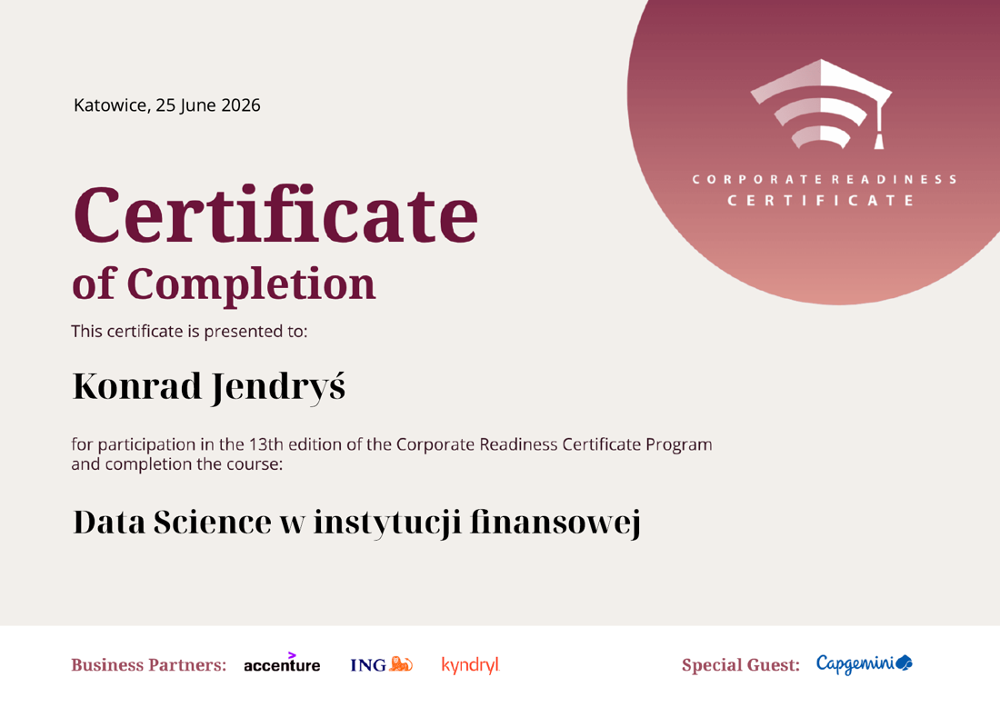
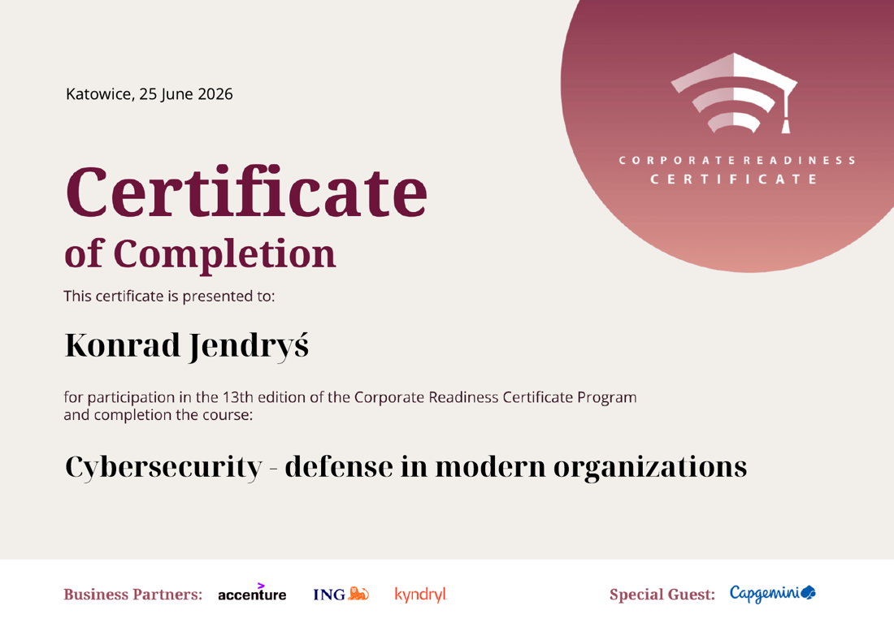

Oceniam spółki po tym, ile gotówki naprawdę zostaje.
Studiuję Analitykę Finansową na Uniwersytecie Ekonomicznym w Katowicach i przygotowuję się do egzaminu na Maklera Papierów Wartościowych.
Prowadzę własny portfel na IKE i przepuszczam każdą spółkę przez ten sam zestaw kryteriów: ROIC, Real FCF liczony jako przepływy operacyjne minus CapEx minus wynagrodzenia w akcjach, oraz rentowność wolnych przepływów porównana z obligacjami skarbowymi. Zysk księgowy potrafi być kwestią założeń, gotówka nie.
Ta strona zbiera to, co z tego wychodzi: notatki analityczne, narzędzia i materiały wideo.
Dwa kursy z 13. edycji programu Corporate Readiness Certificate, prowadzonego przez Accenture, ING i Kyndryl. Pierwszy pokazał mi, jak instytucja finansowa realnie pracuje na danych, od ich przygotowania po modele decyzyjne. Drugi dał podstawy bezpieczeństwa, bez których nie da się dziś pracować przy danych klientów. Oba warsztaty prowadzili praktycy z tych firm, dzięki czemu zobaczyłem branżę od strony operacyjnej, a nie czysto akademickiej.


Projekty
Notatki mają stałą strukturę: teza, model biznesowy, wycena, ryzyka, katalizatory i warunki unieważnienia tezy. Wszystkie są datowane po to, żeby dało się je później rozliczyć.
Czy rynek wycenia nakłady Mety na AI według złego precedensu
Alphabet, Amazon i Microsoft mają segmenty chmurowe, w których zwrot z nakładów widać wprost w raportowanym przychodzie. Meta nie ma odpowiednika. Wniosek rynku jest prosty: trzej konkurenci pokazują rachunek zwrotu z inwestycji, Meta go nie pokazuje.
Uważam ten wniosek za błąd kategorii. Brak osobnej linii przychodowej nie dowodzi braku zwrotu. Dowodzi jedynie, że zwrot nie jest raportowany osobno. W przypadku Mety materializuje się on wewnątrz biznesu reklamowego, poprzez wyższą skuteczność targetowania i wyższą cenę uzyskiwaną za tę samą powierzchnię reklamową.
Cena za reklamę jest tu miarą właściwą, ponieważ jako jedyna nie poddaje się decyzji produktowej. Liczbę wyświetleń można podnieść, zwiększając gęstość reklam w kanale. Cenę podnosi wyłącznie reklamodawca, który uzyskuje lepszy zwrot z wydatku. Rosnąca cena przy rosnącym wolumenie oznacza, że popyt nadąża za podażą powierzchni.
Najmocniejszy argument przeciw nie leży w fundamentach, tylko w ryzyku prawnym: federalny proces w Oakland i wyrok w Nowym Meksyku tworzą ekspozycję, której nie da się ująć modelem przepływów. To dlatego wartość oczekiwana wypada u mnie poniżej scenariusza bazowego.
Mastercard, analiza spółki
Dwudziestominutowe omówienie modelu biznesowego, źródeł przychodu i fundamentów spółki płatniczej.
Screener jakości: ROIC i Real FCF
Skrypt przepuszcza listę spółek przez trzy bramki, których używam przy przeglądzie portfela. Nie służy do wyceny, służy do odsiania spółek, którym nie warto poświęcać czasu.
""" Quality Screener v1.2 Trzy bramki, przez ktore przepuszczam spolki przed dokladniejsza analiza: 1. ROIC > 15% 2. Real FCF = OCF - CapEx - SBC > 0 3. Oczekiwany zwrot (FCF yield + wzrost) > stopa wymagana (10Y UST + premia) Bramka 3 to przeksztalcony model Gordona: P = CF / (r - g), czyli r = CF/P + g. Pierwsza wersja porownywala sama rentownosc Real FCF z rentownoscia obligacji i odrzucala wszystko - obligacja placi staly kupon, przeplywy spolki rosna. Dane z Yahoo Finance. Sa wtorne, wiec przy kazdej pozycji wazacej na decyzji i tak trzeba otworzyc 10-K. To narzedzie do odsiewania, nie do rozstrzygania. """ import pandas as pd import yfinance as yf TICKERS = ["META", "GOOGL", "MA", "AMZN", "NU", "F", "NUE"] ROIC_THRESHOLD = 0.15 EQUITY_RISK_PREMIUM = 0.045 GROWTH_CAP = 0.12 MAX_TAX_RATE = 0.50 FALLBACK_BOND_YIELD = 0.042 FINANCIAL_SECTORS = {"Financial Services", "Financials"} # Yahoo wrzuca sieci platnicze do sektora finansowego, ale one nie biora # ryzyka kredytowego ani nie maja bilansu bankowego - ROIC ma dla nich sens. NOT_REALLY_FINANCIALS = {"MA", "V"} # Nazwy wierszy zmieniaja sie miedzy wersjami yfinance. Pierwszy trafiony wygrywa. ROW_ALIASES = { "ocf": ["Operating Cash Flow", "Total Cash From Operating Activities"], "capex": ["Capital Expenditure", "Capital Expenditures"], "sbc": ["Stock Based Compensation"], "ebit": ["EBIT", "Operating Income"], "pretax_income": ["Pretax Income", "Income Before Tax"], "tax": ["Tax Provision", "Income Tax Expense"], "revenue": ["Total Revenue", "Operating Revenue"], "total_debt": ["Total Debt"], "long_term_debt": ["Long Term Debt", "Long Term Debt And Capital Lease Obligation"], "current_debt": ["Current Debt", "Current Debt And Capital Lease Obligation"], "equity": ["Stockholders Equity", "Total Stockholder Equity"], "cash": [ "Cash And Cash Equivalents", "Cash And Cash Equivalents At Carrying Value", "Cash Cash Equivalents And Short Term Investments", ], } GATE_LABELS = {"gate_roic": "ROIC", "gate_fcf": "Real FCF", "gate_return": "zwrot"} COLUMNS = ["ticker", "roic", "real_fcf_musd", "fcf_yield", "growth", "exp_return", "spread_pp", "gate_roic", "gate_fcf", "gate_return", "summary"] def pick_value(frame, field): """Najnowsza niepusta wartosc pozycji plus data okresu, z ktorego pochodzi.""" if frame is None or getattr(frame, "empty", True): return None, None for row_name in ROW_ALIASES[field]: if row_name not in frame.index: continue selected = frame.loc[row_name] # Zdublowany label daje DataFrame zamiast Series i float() sie wywala. if isinstance(selected, pd.DataFrame): selected = selected.iloc[0] series = selected.dropna() if not series.empty: return float(series.iloc[0]), series.index[0] return None, None def pick_total_debt(balance): value, period = pick_value(balance, "total_debt") if value is not None: return value, period, "" long_term, p1 = pick_value(balance, "long_term_debt") current, p2 = pick_value(balance, "current_debt") if long_term is None and current is None: return None, None, "" return (long_term or 0.0) + (current or 0.0), (p1 or p2), "dlug ze skladowych; " def revenue_cagr(income): """ Wzrost licze z przychodow, nie z Real FCF. FCF potrafi zmienic sie o kilkadziesiat procent przy jednym cyklu inwestycyjnym i zaburzylby bramke. Cena tego uproszczenia: zakladam stabilne marze. """ if income is None or getattr(income, "empty", True): return None, "brak rachunku wynikow" for row_name in ROW_ALIASES["revenue"]: if row_name not in income.index: continue selected = income.loc[row_name] if isinstance(selected, pd.DataFrame): selected = selected.iloc[0] series = selected.dropna() if len(series) < 2: continue newest, oldest = float(series.iloc[0]), float(series.iloc[-1]) if oldest <= 0 or newest <= 0: return None, "przychod niedodatni" return (newest / oldest) ** (1 / (len(series) - 1)) - 1, "" return None, "brak pozycji przychodu" def get_bond_yield(): try: close = yf.Ticker("^TNX").history(period="5d")["Close"].dropna() raw = float(close.iloc[-1]) if raw > 20: # ^TNX bywa kwotowany jako 47.0 zamiast 4.70 raw /= 10 return raw / 100 except Exception: return FALLBACK_BOND_YIELD def screen_ticker(ticker): """Liczy wskazniki dla jednej spolki. Bledy trafiaja do 'warning', nie do wyjatku.""" row = {"ticker": ticker, "sector": None, "roic": None, "real_fcf_musd": None, "fcf_yield": None, "growth": None, "exp_return": None, "spread_pp": None, "period": None, "warning": ""} try: stock = yf.Ticker(ticker) info = stock.info or {} cash_flow, income, balance = stock.cashflow, stock.income_stmt, stock.balance_sheet except Exception as error: row["warning"] = f"pobieranie danych nieudane ({type(error).__name__})" return row row["sector"] = info.get("sector") periods = [] def take(frame, field): value, period = pick_value(frame, field) if period is not None: periods.append(period) return value ebit = take(income, "ebit") pretax_income = take(income, "pretax_income") tax = take(income, "tax") equity = take(balance, "equity") cash, _ = pick_value(balance, "cash") total_debt, debt_period, debt_note = pick_total_debt(balance) if debt_period is not None: periods.append(debt_period) row["warning"] += debt_note if cash is None: cash = 0.0 row["warning"] += "brak gotowki, przyjeto 0 (ROIC zanizony); " if None not in (ebit, pretax_income, tax, total_debt, equity) and pretax_income != 0: # Sufit na stope podatkowa, bo zdarzenia jednorazowe potrafia dac 87%. tax_rate = min(max(tax / pretax_income, 0.0), MAX_TAX_RATE) invested_capital = total_debt + equity - cash if invested_capital > 0: row["roic"] = ebit * (1 - tax_rate) / invested_capital else: row["warning"] += "ujemny kapital zainwestowany; " else: row["warning"] += "niekompletne dane do ROIC; " ocf = take(cash_flow, "ocf") capex = take(cash_flow, "capex") sbc = take(cash_flow, "sbc") if sbc is None: sbc = 0.0 row["warning"] += "brak SBC, przyjeto 0 (Real FCF zawyzony); " if ocf is not None and capex is not None: real_fcf = ocf - abs(capex) - abs(sbc) # CapEx u Yahoo ujemny, SBC dodatni row["real_fcf_musd"] = real_fcf / 1e6 market_cap = info.get("marketCap") if not market_cap: row["warning"] += "brak kapitalizacji; " else: row["fcf_yield"] = real_fcf / market_cap growth, note = revenue_cagr(income) if growth is None: row["warning"] += note + "; " else: row["growth"] = growth if growth > GROWTH_CAP: row["warning"] += f"wzrost {growth:.0%} przyciety do {GROWTH_CAP:.0%}; " row["exp_return"] = row["fcf_yield"] + min(growth, GROWTH_CAP) else: row["warning"] += "niekompletne dane do Real FCF; " # Bez tego mozna policzyc OCF z 2025 minus CapEx z 2024 i nie zauwazyc, # bo wynik wyglada sensownie. if periods: row["period"] = max(periods).date().isoformat() if len(set(periods)) > 1: span = sorted({p.date().isoformat() for p in periods}) row["warning"] += f"dane z roznych okresow ({', '.join(span)}); " if row["sector"] in FINANCIAL_SECTORS and ticker.upper() not in NOT_REALLY_FINANCIALS: row["warning"] += "spolka finansowa - ROIC nieporownywalny; " return row def verdict(value, threshold): if value is None or pd.isna(value): return "-" return "PASS" if value > threshold else "FAIL" def summarize(gates): """ Liczy tylko bramki, ktore dalo sie policzyc. Brak jednej pozycji w sprawozdaniu nie powinien unieważniać dwoch pozostalych - traci sie wtedy informacje, ktora juz sie ma. """ available = {name: result for name, result in gates.items() if result != "-"} if not available: return "brak danych" passed = sum(1 for result in available.values() if result == "PASS") summary = f"{passed}/{len(available)}" missing = [GATE_LABELS[name] for name in gates if gates[name] == "-"] if missing: summary += f" (bez {', '.join(missing)})" return summary def build_report(tickers, bond_yield): if not tickers: return pd.DataFrame(columns=COLUMNS + ["sector", "period", "warning"]) required_return = bond_yield + EQUITY_RISK_PREMIUM table = pd.DataFrame([screen_ticker(t) for t in tickers]) table["gate_roic"] = table["roic"].apply(lambda v: verdict(v, ROIC_THRESHOLD)) table["gate_fcf"] = table["real_fcf_musd"].apply(lambda v: verdict(v, 0)) table["gate_return"] = table["exp_return"].apply(lambda v: verdict(v, required_return)) # Nadwyzka ponad stope wymagana jest uzyteczniejsza od PASS/FAIL, # bo pozwala uszeregowac spolki, ktore bramke przeszly. table["spread_pp"] = table["exp_return"].apply( lambda v: None if v is None or pd.isna(v) else (v - required_return) * 100 ) table["summary"] = [ summarize(gates) for gates in table[list(GATE_LABELS)].to_dict(orient="records") ] return table.sort_values("spread_pp", ascending=False, na_position="last") def print_report(table, bond_yield): required_return = bond_yield + EQUITY_RISK_PREMIUM print(f"10Y UST: {bond_yield:.2%} + premia za ryzyko {EQUITY_RISK_PREMIUM:.1%}" f" = stopa wymagana {required_return:.2%}") print(f"Prog ROIC: {ROIC_THRESHOLD:.0%} | sufit wzrostu: {GROWTH_CAP:.0%}") print("Oczekiwany zwrot = rentownosc Real FCF + wzrost przychodow.") print("Real FCF w mln USD, dane roczne z ostatniego sprawozdania.\n") if table.empty: print("Brak spolek do przeskanowania.") return pct = lambda v, d=1: "-" if pd.isna(v) else f"{v:.{d}%}" display = table[COLUMNS].copy() display["roic"] = table["roic"].map(pct) display["real_fcf_musd"] = table["real_fcf_musd"].map(lambda v: "-" if pd.isna(v) else f"{v:,.0f}") display["fcf_yield"] = table["fcf_yield"].map(lambda v: pct(v, 2)) display["growth"] = table["growth"].map(pct) display["exp_return"] = table["exp_return"].map(lambda v: pct(v, 2)) display["spread_pp"] = table["spread_pp"].map(lambda v: "-" if pd.isna(v) else f"{v:+.1f}pp") print(display.to_string(index=False)) flagged = table[table["warning"] != ""] if not flagged.empty: print("\nOstrzezenia:") for _, r in flagged.iterrows(): print(f" [{r['ticker']}] {r['warning'].rstrip('; ')}") if __name__ == "__main__": yield_10y = get_bond_yield() print_report(build_report(TICKERS, yield_10y), yield_10y)
10Y UST: 4.70% + premia za ryzyko 4.5% = stopa wymagana 9.20%
Prog ROIC: 15% | sufit wzrostu: 12%
Oczekiwany zwrot = rentownosc Real FCF + wzrost przychodow.
Real FCF w mln USD, dane roczne z ostatniego sprawozdania.
ticker roic real_fcf_musd fcf_yield growth exp_return spread_pp gate_roic gate_fcf gate_return summary
F -4.1% 11,957 21.43% 5.8% 27.25% +18.1pp FAIL PASS PASS 2/3
NU - 2,888 4.21% 52.9% 16.21% +7.0pp - PASS PASS 2/2 (bez ROIC)
MA 96.2% 15,836 3.15% 13.8% 15.15% +6.0pp PASS PASS PASS 3/3
META 23.1% 25,682 1.85% 19.9% 13.85% +4.7pp PASS PASS PASS 3/3
GOOGL 29.9% 48,313 1.16% 12.5% 13.16% +4.0pp PASS PASS PASS 3/3
AMZN - -11,772 -0.42% 11.7% 11.31% +2.1pp - FAIL PASS 1/2 (bez ROIC)
NUE 8.4% -321 -0.59% -7.8% -8.43% -17.6pp FAIL FAIL FAIL 0/3
Ostrzezenia:
[NU] niekompletne dane do ROIC; wzrost 53% przyciety do 12%; spolka finansowa - ROIC nieporownywalny
[MA] wzrost 14% przyciety do 12%
[META] wzrost 20% przyciety do 12%
[GOOGL] wzrost 13% przyciety do 12%
[AMZN] niekompletne dane do ROIC
Bramka 1: ROIC powyżej 15%
Zwrot z zainwestowanego kapitału liczony jako NOPAT do kapitału zainwestowanego, czyli długu plus kapitału własnego minus gotówki. Odpowiada na pytanie, czy biznes zarabia więcej, niż kosztuje go kapitał.
Bramka 2: Real FCF powyżej zera
Przepływy operacyjne minus CapEx minus wynagrodzenia w akcjach. Odjęcie SBC jest celowe: to realny koszt dla akcjonariusza, choć nie wypływa z rachunku bankowego. Spółka płacąca akcjami zamiast gotówką rozwadnia udział właścicieli, a klasyczny FCF tego nie pokazuje.
Bramka 3: oczekiwany zwrot ponad stopę wymaganą
Oczekiwany zwrot to rentowność Real FCF powiększona o wzrost, stopa wymagana to dziesięcioletnie obligacje USA plus premia za ryzyko akcji. Konstrukcja wynika z przekształcenia modelu Gordona: skoro cena to przepływ podzielony przez różnicę stopy wymaganej i wzrostu, to oczekiwany zwrot równa się rentowności przepływów plus ich wzrost.
Dlaczego akurat tak
Pierwsza wersja zestawiała samą rentowność Real FCF z rentownością obligacji. Pierwszy przebieg pokazał, że to porównanie jest nierówne, bo obligacja płaci stały kupon, a przepływy spółki rosną. Przy rentowności dziesięciolatek na poziomie 4,7% bramka odrzucała wszystkie spółki z portfela, łącznie z Mastercardem przy ROIC 96%. Bramka, która odrzuca każdego, nie niesie informacji.
Czego to narzędzie nie potrafi
Dane pochodzą z Yahoo Finance, więc są wtórne. Przy każdej pozycji ważącej na decyzji i tak trzeba otworzyć 10-K. ROIC nie ma sensu dla banków i ubezpieczycieli, bo dług jest u nich surowcem, a nie finansowaniem. Wzrost liczony jest z przychodów, co zakłada stabilne marże. Premia za ryzyko na poziomie 4,5% jest wyborem, nie faktem. Skrypt ostrzega o każdym z tych przypadków zamiast podawać liczbę bez kontekstu.
Co pokazał przebieg
Na liście są celowo dwie spółki spoza mojego portfela: Ford i Nucor. Narzędzie, które przepuszcza wyłącznie to, co się już posiada, niczego nie weryfikuje.
Nucor wypadł na wszystkich trzech bramkach: ujemny Real FCF, kurczące się przychody, ROIC poniżej progu. Hutnictwo po szczycie cyklu zostało odrzucone dokładnie tak, jak powinno.
Ford ujawnił natomiast wadę samego narzędzia. Wypadł na ROIC, ale rentowność przepływów 21,4% wypchnęła go na szczyt rankingu. Ta liczba jest artefaktem: przepływy operacyjne Forda zawierają działalność kredytową Ford Credit, więc nie są gotówką z produkcji samochodów. Wniosek na kolejną wersję: sortowanie po nadwyżce ma sens wyłącznie wśród spółek, które przeszły komplet bramek. W obecnej wersji trzeba czytać kolumnę podsumowania, a nie kolejność wierszy.
Alphabet, koszt utrzymania pozycji w wyszukiwarce
Co rosnące nakłady na infrastrukturę AI robią z rentownością Google Services i jak to zmienia obraz wolnych przepływów.
Model DCF z analizą wrażliwości
Wycena metodą zdyskontowanych przepływów w trzech scenariuszach, z tabelą wrażliwości na koszt kapitału i stopę wzrostu rezydualnego.
Otwarty na pierwsze doświadczenie w branży finansowej.
Najszybciej odpowiadam na LinkedInie.